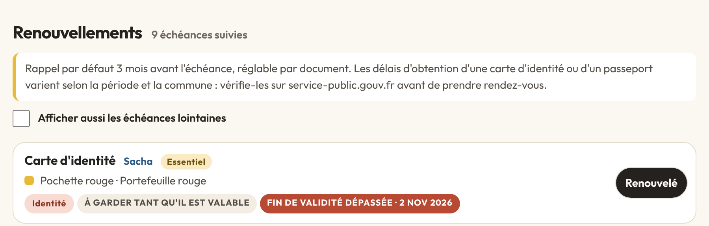
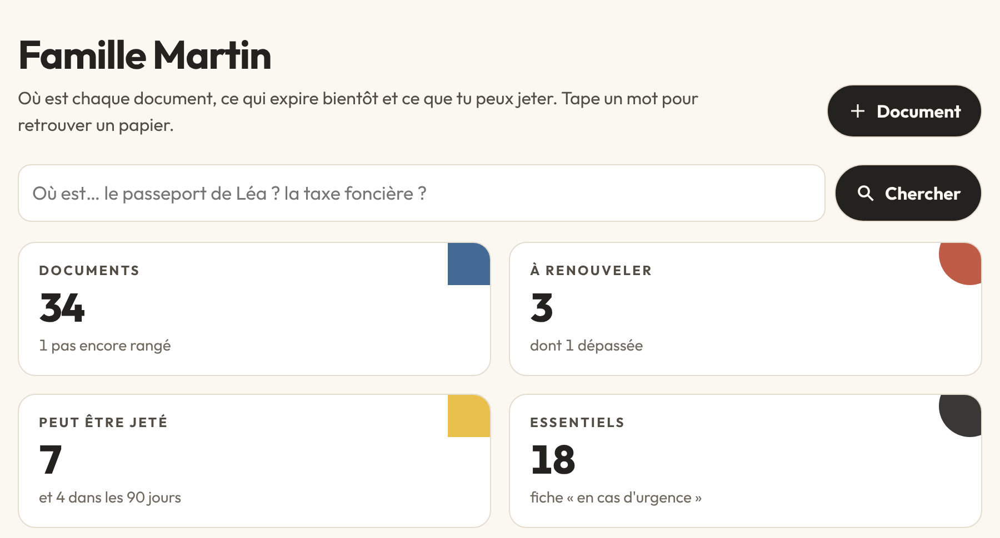
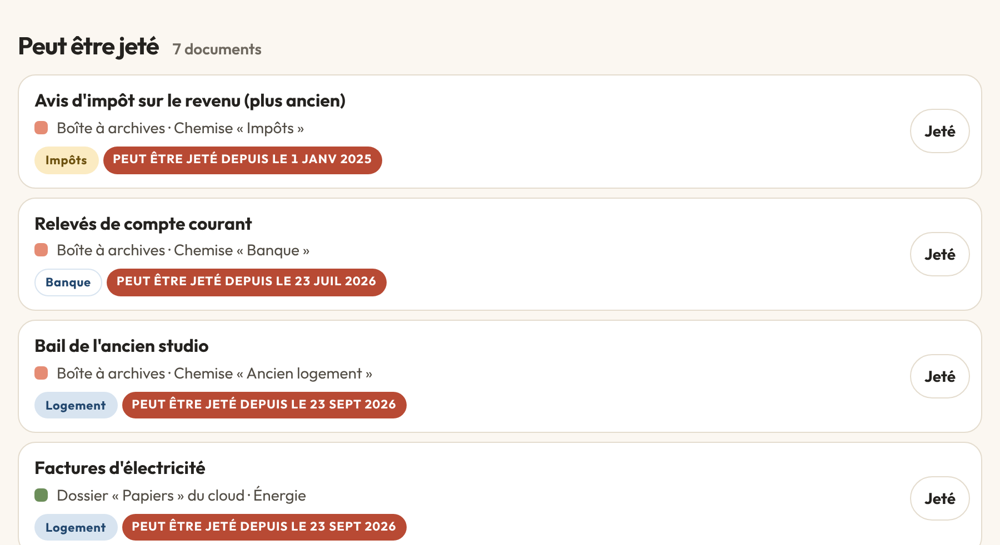

Papiers du foyer · fin d'année
Lesquels ? Et lequel a expiré sans que personne le voie ?
Faites glisser
Pendant ce temps

Données fictives
3 papiers à renouveler, dont 1 déjà dépassé. Et le délai pour en obtenir une nouvelle varie selon la période et la commune.
Papiers du foyer

Données fictives
Où est chaque papier, ce qui expire, ce qui peut partir. Une recherche suffit pour le retrouver.
Les 7 à trier

Données fictives
Durées tirées de service-public.gouv.fr. Rien n'est jeté sans vous.
Puis achat unique : 15 €. Vos données sont reprises.
Besoin de plus ? Vos règles, vos outils : je le construis sur mesure.